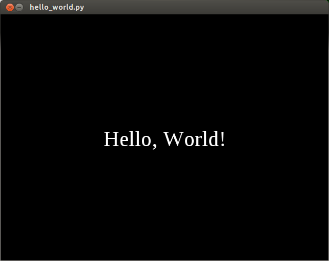

Writing a cocos2d application¶
Getting started with a new library or framework can be daunting, especially when presented with a large amount of reference material to read. This chapter gives a very quick introduction to cocos2d without covering any of the details.
Hello, World¶
We’ll begin with the requisite “Hello, World” introduction. This program will open a window with some text in it and wait to be closed. You can find the entire program in the samples/hello_world.py file.
Begin by importing the cocos package:
import cocos
Subclass a Layer and define the logic of you program here:
class HelloWorld(cocos.layer.Layer):
Always call super in the constructor:
def __init__(self):
super(HelloWorld, self).__init__()
To display the text, we’ll create a Label. Keyword arguments are used to set the font, position and alignment of the label:
label = cocos.text.Label(
'Hello, world',
font_name='Times New Roman',
font_size=32,
anchor_x='center', anchor_y='center'
)
The label position will be the center of the screen:
label.position = 320, 240
Since Label is a subclass of CocosNode it can be added as a child. All CocosNode objects know how to render itself, perform actions and transformations. To add it as a layer’s child, use the CocosNode.add method:
self.add(label)
After defining the HelloWorld class, we need to initialize and create a window.
To do this, we initialize the Director:
cocos.director.director.init()
Then we create a HelloWorld instance:
hello_layer = HelloWorld()
Then we create an Scene that contains the HelloWorld layer as a child:
main_scene = cocos.scene.Scene (hello_layer)
And finally we run the scene:
cocos.director.director.run(main_scene)
A shorter way to write the last 3 statements is this:
#cocos.director.director.run(cocos.scene.Scene(HelloWorld()))
Hello Actions¶
This example is very similar to example #1, with the difference that it introduces us to the world of actions. An action is like an order. You can tell any CocosNode object to execute an action. You can find the entire program in the samples/hello_world_actions.py file.
Like in our previous example, we import the cocos package:
import cocos
If you’re going to use several actions, you can import all the available actions into the namespace with this import:
from cocos.actions import *
We subclass ColorLayer to have a background color, and then we call super() with a blueish color:
class HelloWorld(cocos.layer.ColorLayer):
def __init__(self):
# blueish color
super( HelloWorld, self ).__init__( 64,64,224,255)
As in the previous example, we create and add a label:
label = cocos.text.Label('Hello, World!',
font_name='Times New Roman',
font_size=32,
anchor_x='center', anchor_y='center')
# set the label in the center of the screen
label.position = 320,240
self.add( label )
In this example we also create and add an sprite as a child. In cocos2d sprites are Sprite objects:
sprite = cocos.sprite.Sprite('grossini.png')
We place the sprite in the center of the screen. Default position is (0,0):
sprite.position = 320,240
We set the scale attribute to 3. This means that our sprite will be 3 times bigger. The default scale attribute is 1:
sprite.scale = 3
We add the sprite as a child but on top of the label by setting the z-value to 1, since the default z-value is 0:
self.add( sprite, z=1 )
We create a ScaleBy action. It will scale 3 times the object in 2 seconds:
scale = ScaleBy(3, duration=2)
- We tell the label to:
- scale 3 times in 2 seconds
- then to scale back 3 times in 2 seconds
- and we repeat these 2 actions forever
Notice that the ‘+’ operator is the Sequence action:
label.do( Repeat( scale + Reverse( scale) ) )
And we tell the sprite to do the same actions but starting with the ‘scale back’ action:
sprite.do( Repeat( Reverse(scale) + scale ) )
Then we initialize the director, like in the previous example:
cocos.director.director.init()
hello_layer = HelloWorld ()
And... we tell the Layer (yes, all CocosNode objects can execute actions) to execute a RotateBy action of 360 degrees in 10 seconds:
hello_layer.do( RotateBy(360, duration=10) )
Finally we start the execution:
# A scene that contains the layer hello_layer
main_scene = cocos.scene.Scene (hello_layer)
# And now, start the application, starting with main_scene
cocos.director.director.run (main_scene)
Handling Events¶
All our previous examples are non-interactive. They display something, but do not respond to user input (except for quitting when you press ESC or close the window). Cocos obtains inputs by listening to director.window events, and conveniently cocos.layer can automatically listen to director.window events: in your layer subclass set the is_event_handler class member to True and cocos will take care.
In this section we will build step by step the demo provided in samples/handling_events.py; this is a very simple cocos app which shows which keys are pressed, and reacts to mouse motion and clicks. Run the app before reading on te get a clearer idea of what we are trying to build.

This demo has a scene with two layers; one shows which keys are currently pressed (none, one, or maybe several at the same time), the other one shows text with the mouse position, and clicking moves the text.
We start defining the KeyDisplay layer class. As always, we put some initialization on __init__ and the code for displaying it in step:
class KeyDisplay(cocos.layer.Layer):
# If you want that your layer receives director.window events
# you must set this variable to 'True'
is_event_handler = True
def __init__(self):
super( KeyDisplay, self ).__init__()
self.text = cocos.text.Label("", x=100, y=280 )
# To keep track of which keys are pressed:
self.keys_pressed = set()
self.update_text()
self.add(self.text)
def update_text(self):
key_names = [pyglet.window.key.symbol_string (k) for k in self.keys_pressed]
text = 'Keys: '+','.join (key_names)
# Update self.text
self.text.element.text = text
This class defines a key_pressed set, which should be the set of keys pressed at any time. However, this code as it is still does nothing. We need to tell this layer to update this set when a key is pressed or released. In other words, we need to add event handlers to the layer. Adding event handlers to a layer is just a matter of adding methods to it called on_<event name>. The two events that interest us now are on_key_press and on_key_release:
def on_key_press (self, key, modifiers):
"""This function is called when a key is pressed.
'key' is a constant indicating which key was pressed.
'modifiers' is a bitwise or of several constants indicating which
modifiers are active at the time of the press (ctrl, shift, capslock, etc.)
"""
self.keys_pressed.add (key)
self.update_text()
def on_key_release (self, key, modifiers):
"""This function is called when a key is released.
'key' is a constant indicating which key was pressed.
'modifiers' is a bitwise or of several constants indicating which
modifiers are active at the time of the press (ctrl, shift, capslock, etc.)
Constants are the ones from pyglet.window.key
"""
self.keys_pressed.remove (key)
self.update_text()
def update_text(self):
key_names = [pyglet.window.key.symbol_string (k) for k in self.keys_pressed]
text = 'Keys: '+','.join (key_names)
# Update self.text
self.text.element.text = text
With that code, the layer is now fully working. You can press and release keys or key combinations, and you will se how the display is updated telling you which keys are pressed at any time.
Handling mouse input is similar. You have three events of interest: on_mouse_press, on_mouse_motion and on_mouse_drag. With that, we can define our layer:
class MouseDisplay(cocos.layer.Layer):
is_event_handler = True #: enable director.window events
def __init__(self):
super( MouseDisplay, self ).__init__()
self.posx = 100
self.posy = 240
self.text = cocos.text.Label('No mouse events yet', font_size=18, x=self.posx, y=self.posy )
self.add( self.text )
def update_text (self, x, y):
text = 'Mouse @ %d,%d' % (x, y)
self.text.element.text = text
self.text.element.x = self.posx
self.text.element.y = self.posy
And then add event handlers to update the text when the mouse is moved, and change the text position when any button is clicked:
def on_mouse_motion (self, x, y, dx, dy):
"""Called when the mouse moves over the app window with no button pressed
(x, y) are the physical coordinates of the mouse
(dx, dy) is the distance vector covered by the mouse pointer since the
last call.
"""
self.update_text (x, y)
def on_mouse_drag (self, x, y, dx, dy, buttons, modifiers):
"""Called when the mouse moves over the app window with some button(s) pressed
(x, y) are the physical coordinates of the mouse
(dx, dy) is the distance vector covered by the mouse pointer since the
last call.
'buttons' is a bitwise or of pyglet.window.mouse constants LEFT, MIDDLE, RIGHT
'modifiers' is a bitwise or of pyglet.window.key modifier constants
(values like 'SHIFT', 'OPTION', 'ALT')
"""
self.update_text (x, y)
def on_mouse_press (self, x, y, buttons, modifiers):
"""This function is called when any mouse button is pressed
(x, y) are the physical coordinates of the mouse
'buttons' is a bitwise or of pyglet.window.mouse constants LEFT, MIDDLE, RIGHT
'modifiers' is a bitwise or of pyglet.window.key modifier constants
(values like 'SHIFT', 'OPTION', 'ALT')
"""
self.posx, self.posy = director.get_virtual_coordinates (x, y)
self.update_text (x,y)
The only thing a bit unusual here is the call to director.get_virtual_coordinates (x, y). As explained in the example before, cocos has two coordinates systems, a physical one and a virtual one. The mouse event handlers receive their arguments from pyglet in physical coordinates. If you want to map that to virtual coordinates, you need to use the director.get_virtual_coordinates method, which does the correct mapping. If you put instead self.posx, self.posy = x,y in the on_mouse_press handler above, you will see that the app seems to work, but if you resize the window, the clicks will move the text to the wrong place.
- For completneddes, they are other mouse events that can be of interest:
- on_mouse_release : called when a button is released on_mouse_scroll : called when the mouse wheel moved on_mouse_leave : called when the mouse cursor goes out of the window on_mouse_enter : called when the mouse cursor enters the window
The demo does not have much more code, just creating a scene with these two layers and running it:
director.init(resizable=True)
# Run a scene with our event displayers:
director.run( cocos.scene.Scene( KeyDisplay(), MouseDisplay() ) )
You can now play to the demo and change it. Some things you can try are:
- Change the on_mouse_press handler and remove the mapping to virtual coordinates; note how it behaves strangely after resizing the window
- Note that the mouse coordinates on screen are physical coordinates, so their range changes when resizing the window; modify the demo to show virtual coordinates.
- Change the code to be able to move the mouse coordinates label when you drag the mouse
- Change the code so the keyboard display also shows the modifiers set at each time
Where to next?¶
The examples presented in this chapter should have given you enough information to get started writing simple arcade and point-and-click-based games.
The remainder of this programming guide goes into quite technical detail regarding some of cocos’s features. While getting started, it’s recommended that you skim the beginning of each chapter but not attempt to read through the entire guide from start to finish.
To achieve optimal performance in your 2D applications you’ll need to work with OpenGL directly. The canonical references for OpenGL are The OpenGL Programming Guide and The OpenGL Shading Language.
Since cocos2d uses pyglet you shall also check pyglet Programming Guide and pyglet API Reference
There are numerous examples of cocos2d applications in the samples/
directory of the documentation and source distributions. Keep checking
http://www.cocos2d.org/ for more examples and tutorials as they are written.